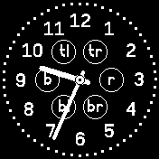
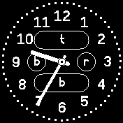

Please customize your analog clock for the Bangle.js 2 according to your needs. When finished, click on "Upload" at the bottom of this form.
(Pressing "Upload" will also backup your current configuration so that you won't have to enter the same settings over and over again when you come back to this page later)
Click on the desired clock size calculator (if you installed some widgets on your Bangle.js 2, the smart one may produce larger clock faces than the simple one):
|
simple |
smart |
(custom) |
If you prefer a "custom" clock size calculator, please enter the URL of its JavaScript module below:
custom URL:
Click on the desired clock face:
|
(none) |
four-numbered |
twelve-numbered |
"rainbow" colored |
(custom) |
If you prefer a "custom" clock face, please enter the URL of its JavaScript module below:
custom URL:
Clock faces are drawn in the configured foreground and background colors (you may select them at the end of this form)
"Four-numbered" clock faces may draw indian-arabic or roman numerals. Which do you prefer?
indian-arabic (3, 6, 9, 12)
roman (III, VI, IX, XII)
The "twelve-numbered" and "rainbow"-colored faces may be drawn with or without dots marking the position of every minute. Which variant do you prefer?
without dots
with dots
Click on the desired clock hands:
|
simple |
rounded |
hollow |
(custom) |
If you prefer "custom" clock hands, please enter the URL of their JavaScript module below:
custom URL:
Clock hands are drawn in the configured foreground and background colors (you may select them at the end of this form)
Hollow clock hands may optionally be filled with a given color. If you have chosen hollow hands, please specify the desired fill mode and color below:
Hollow Hand Fill Color:
Additionally, all clock hands may be drawn with or without second hands. If you want them to be drawn, please click on their desired color below (or choose "themed" to use your Bangle's configured theme) - if not, just select "none":
Second Hand Color:
Complications are small displays for additional information. If you want one or multiple complications to be added to your clock, you'll have to specify which one to be loaded and where it should be placed.
Up to 6 possible positions exist (top-left, top-right, left, right, bottom-left and bottom-right). Alternatively, the positions "top-left" and "top-right" may be traded for a slightly larger complication at position "top" or "bottom-left" and "bottom-right" for one at the "bottom":
 
| top-left: | ||
| Complication: | ||
| custom URL: | ||
| top: | ||
| Complication: | ||
| custom URL: | ||
| top-right: | ||
| Complication: | ||
| custom URL: | ||
| left: | ||
| Complication: | ||
| custom URL: | ||
| right: | ||
| Complication: | ||
| custom URL: | ||
| bottom-left: | ||
| Complication: | ||
| custom URL: | ||
| bottom: | ||
| Complication: | ||
| custom URL: | ||
| bottom-right: | ||
| Complication: | ||
| custom URL: | ||
Color faces, hands and complications are often drawn using configurable foreground and background colors.
Here you may specify these colors. Click on a color to select it - or on "themed" if you want the clock to use the currently configured theme on your Bangle.js 2:
Background Color:
Foreground Color:
When you are satisfied with your configuration, just click on "Upload" in order to generate the specified clock and upload it to your Bangle.js 2:
This application is based on the author's Analog Clock Construction Kit (ACCK). If you need a different "clockwork", clock size calculation or clock face, or specific clock hands or complications, just follow the link to learn how to implement your own clock parts.